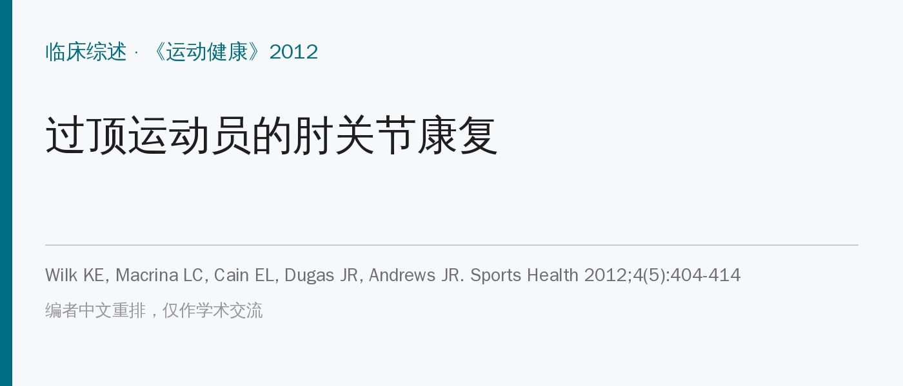
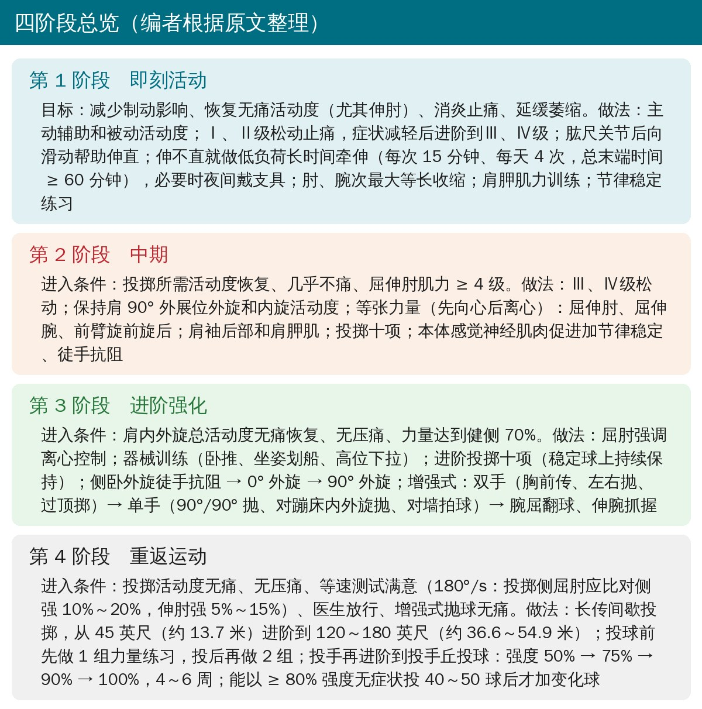
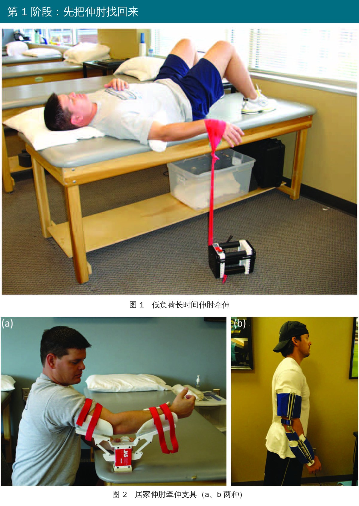
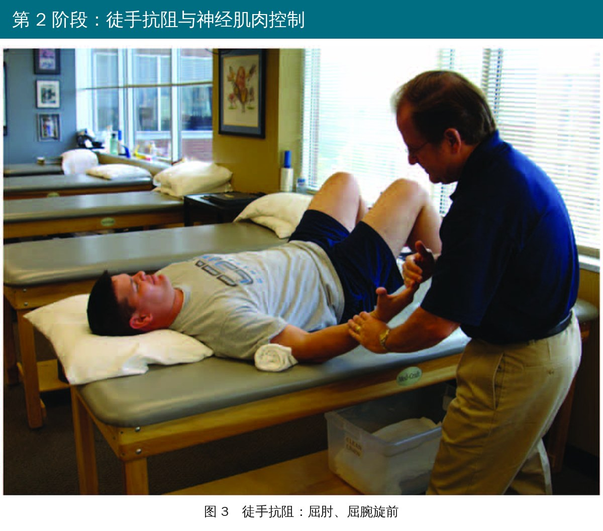
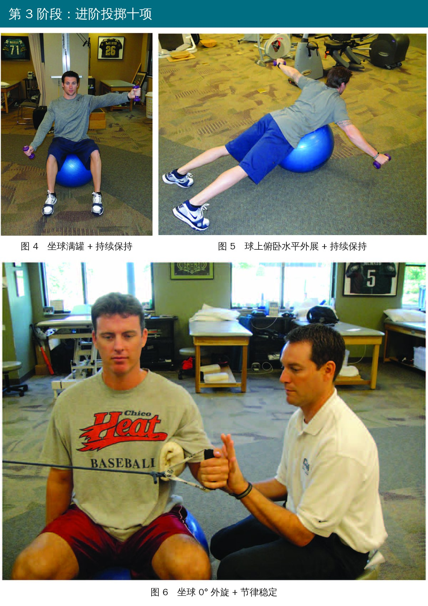
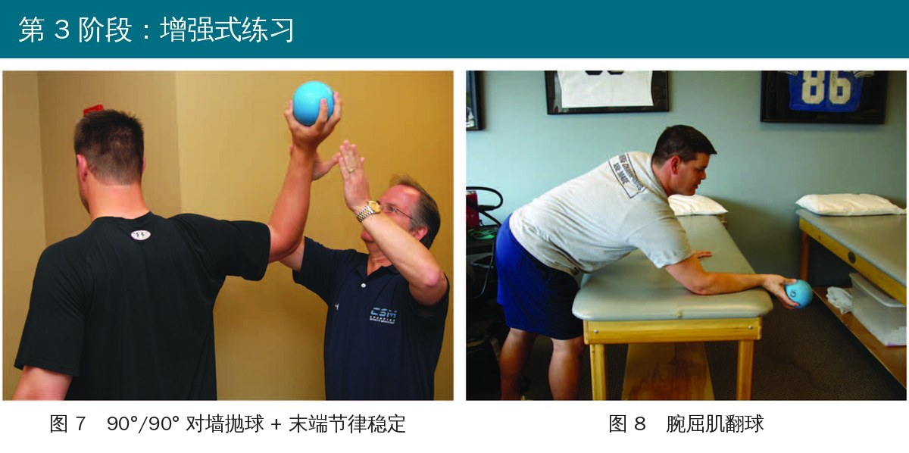
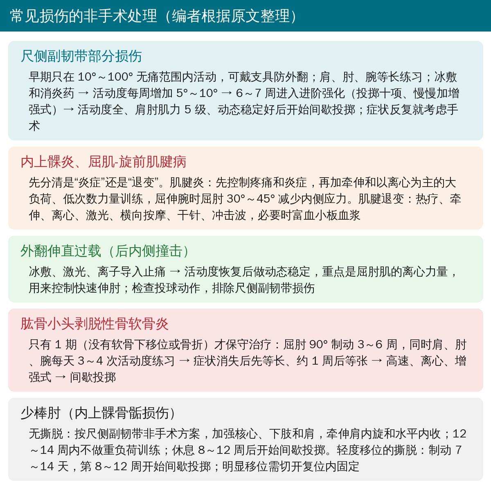
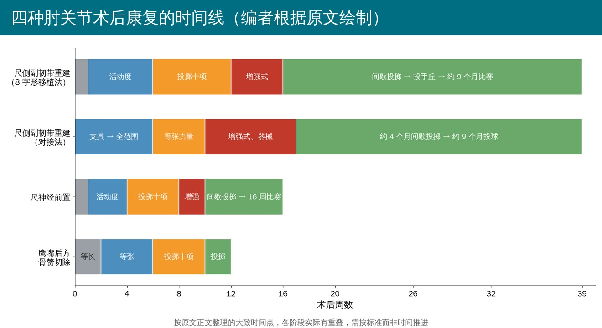
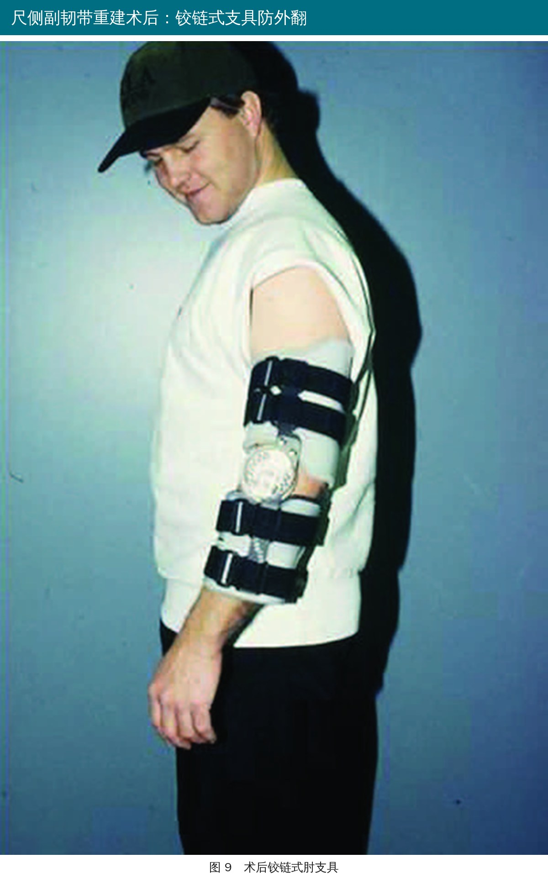

🔖原文信息（编者中文重排）
📚 文献信息
▪ Wilk KE, Macrina LC, Cain EL, Dugas JR, Andrews JR. Rehabilitation of the overhead athlete's elbow. Sports Health. 2012;4(5):404-414. doi:10.1177/1941738112455006
▪ 作者来自美国 Champion 运动医学中心和 Andrews 运动医学与骨科中心，Wilk、Andrews 是投掷运动员康复领域的代表人物
▪ 临床综述（专家经验方案）
美国职业棒球大联盟投手的伤病里，22%～26% 在肘部。投球时肘伸直速度超过每秒 2300 度，内侧剪切力约 300 N、压缩力约 900 N；加速期的外翻力矩约 64 N·m，超过了尺侧副韧带本身能承受的极限。
• 内侧被反复牵拉 → 尺侧副韧带损伤、内上髁炎、少棒肘
• 外侧被反复挤压 → 肱骨小头剥脱性骨软骨炎
• 后方受牵拉、挤压和扭转 → 外翻伸直过载、骨赘、鹰嘴应力骨折
所以无论受伤后还是术后，康复都要循序渐进、多阶段推进，同时练整条动力链：肩胛、肩、手、核心、髋和腿。

🔖四阶段总览（编者根据原文整理）

🔖原文图 1、2：低负荷长时间伸肘牵伸，以及两种居家伸肘牵伸支具
• 伸肘是重中之重：肘关节特别容易屈曲挛缩。术后的伸肘要以受伤前的角度为标准，不要简单和对侧比；职业投手本来就常常差 3°～5° 伸不直
• 松动：先用Ⅰ、Ⅱ级止痛，症状减轻后进阶到Ⅲ、Ⅳ级；做肱尺关节后向滑动帮助伸直，也别忘了肱桡关节和桡尺关节
• 低负荷长时间牵伸：仰卧，上臂远端垫毛巾卷，手腕挂轻弹力带拉向地面，肩内旋、前臂旋前；每次 15 分钟、每天 4 次，末端时间累计 ≥ 60 分钟，以不痛、不痉挛为度；效果不好就夜间戴牵伸支具
• 看终末感决定力度：活动受限、终末感硬且不痛 → 可以更积极；没到阻力就痛或终末感空 → 慢慢来
• 肘腕各肌群做无痛的次最大等长收缩；肩胛肌力训练立即开始；肩、肘、前臂的节律稳定练习
• 冰敷、激光、高压电刺激用于消炎止痛

🔖原文图 3：屈肘、屈腕旋前肌群的徒手向心和离心抗阻
• 进入条件：投掷所需活动度恢复、几乎不痛、屈伸肘肌力 ≥ 4 级
• 肩的活动度：重点保持肩 90° 外展位外旋（外旋不足会增加肘内侧应力）和内旋（内旋活动度可提供保护性的内翻力）
• 力量：先向心后离心，屈伸肘、屈伸腕、前臂旋前旋后；肩袖后部和肩胛肌；做投掷十项。有研究显示 6 周投掷十项能让高中投手球速提高约 2 英里/小时
• 神经肌肉控制：本体感觉神经肌肉促进加节律稳定、肘腕徒手抗阻

🔖原文图 4～6：进阶投掷十项，在稳定球上做持续保持和节律稳定

🔖原文图 7、8：90°/90° 对墙抛球加末端节律稳定、腕屈肌翻球
• 进入条件：肩内外旋总活动度无痛恢复、无压痛、力量达到健侧 70%
• 屈肘强调离心：肱二头肌在随挥期负责“刹车”，防止鹰嘴撞向鹰嘴窝；肱三头肌主要练向心（对应加速期）
• 器械训练：卧推、坐姿划船、高位下拉
• 进阶投掷十项：坐在稳定球上做满罐、俯卧水平外展、外旋，加持续保持和节律稳定
• 增强式：双手（胸前传、左右抛、过顶掷）→ 单手（90°/90° 抛、对蹦床做 0° 内外旋抛、对墙拍球）→ 腕屈翻球、伸腕抓握，用约 0.9 kg 的药球
• 进入条件：投掷活动度无痛、无压痛、等速测试满意、医生放行，增强式抛球无痛且动作质量好
• 等速参考：180°/s 时投掷侧屈肘肌力应比对侧强 10%～20%，伸肘强 5%～15%
• 长传间歇投掷：从 45 英尺（约 13.7 米）开始，按位置进阶到 120～180 英尺（约 36.6～54.9 米），全程无痛
• 投前 1 组、投后 2 组力量练习；第二天练肩胛、外旋和核心
• 投手再上投手丘：强度 50% → 75% → 90% → 100%，用 4～6 周；能以 ≥ 80% 强度无症状投 40～50 球后才加变化球

🔖常见损伤的非手术处理（编者根据原文整理）
• 尺侧副韧带部分损伤：先在 10°～100° 无痛范围内活动，必要时戴支具防外翻 → 每周增加 5°～10° → 6～7 周进入进阶强化 → 肌力 5 级、动态稳定良好后开始间歇投掷；症状反复就考虑手术
• 内上髁炎、屈肌-旋前肌腱病：先分清“炎症”还是“退变”。炎症期控制疼痛后，做以离心为主的大负荷、低次数训练，屈伸腕时屈肘 30°～45° 以减少内侧应力；退变期以热疗、离心、横向按摩、干针、冲击波等促进修复
• 外翻伸直过载：止痛后重点练屈肘肌离心力量，用来控制快速伸肘；同时检查投球动作，排除尺侧副韧带损伤
• 肱骨小头剥脱性骨软骨炎：只有 1 期适合保守治疗：屈肘 90° 制动 3～6 周 → 等长 → 约 1 周后等张 → 高速、离心、增强式 → 间歇投掷
• 少棒肘：无撕脱的按尺侧副韧带非手术方案处理，12～14 周内不做重负荷训练，休息 8～12 周后开始投；轻度移位的撕脱制动 7～14 天，第 8～12 周开始投

🔖四种术后康复的大致时间线（编者根据原文绘制）

🔖原文图 9：尺侧副韧带重建术后用铰链式肘支具保护移植物
• 尺侧副韧带重建（8 字形移植法）：屈肘 90° 后托 7 天；被动活动立即开始，伸直早早做到至少 15°（能完全伸直且不痛也可以，完全伸直不会给移植物带来过大应力），屈曲从 100° 开始每周加 10°，4～6 周全范围；3～4 周轻等张、6 周投掷十项、8～9 周渐进抗阻；12～16 周离心和增强式（12 周双手、14 周单手）；16 周开始间歇投掷，约 9 个月回到比赛投球。743 名运动员中 83% 在 1 年内回到原水平或更高
• 尺侧副韧带重建（对接法）：支具前 3 周限制在 30°～60°，第 4 周 15°～90°，6 周全范围；6 周等张、约 10 周增强式和器械；野手 12 周开始击球；4 个月间歇投掷，约 9 个月正式投球
• 尺神经前置：后托 1 周，3～4 周恢复全活动度；4～6 周投掷十项，8 周进阶训练和增强式，10～12 周间歇投掷，约 16 周回到比赛
• 鹰嘴后方骨赘切除：伸肘恢复要更保守（术后疼痛限制）；第 10 天约 15°～105/110°，第 14 天约 5～10°～115°，20～25 天全范围；前 2 周注意肱三头肌用力引起的后方痛；6 周投掷十项，10～12 周间歇投掷
• 专家经验为主：时间节点和标准来自作者团队大量临床经验，几乎没有对照研究直接验证
• 关键细节在附表里：完整的分期方案、间歇投掷程序和投掷十项动作都放在在线补充材料里，正文只有概要
• 部分理疗证据薄弱：激光、超声、离子导入、一氧化氮贴片等，作者列为常用手段，但证据并不强
• 人群是棒球投手：网球、高尔夫等其他过顶运动可借鉴原则，但间歇程序要换成对应项目
• 非手术尺侧副韧带的时间算不通：从 10°～100° 开始，每周增加 5°～10°，却说 3～4 周恢复全活动度；屈曲从 100° 到约 145° 就要 4.5～9 周
• 剥脱性骨软骨炎：制动和活动矛盾：说屈肘 90° 制动 3～6 周，同时又要每天做 3～4 次肩、肘、腕活动度练习；前一句“相对休息和制动直到肘部症状”也没写完
• 内上髁的证据用的是外上髁研究：讲内上髁炎时，支持富血小板血浆的几项研究全部针对的是外侧网球肘
• 解剖表述错误：外翻伸直过载写成“鹰嘴楔入内侧鹰嘴”，应为鹰嘴撞击鹰嘴窝内侧壁
• 支具时间前后矛盾：尺侧副韧带重建术后先说后托只用 7 天，接着又说“4 周后”从后托换成铰链支具
• 伸肘缺失数字不一致：一处说职业投手通常差 3°～5°，紧接着引用的研究是平均差 7°
• 表格不在正文：正文引用的表 1、表 2 以及补充表 3～8、附录 A、B 都只在在线补充材料里，PDF 中看不到
• 小错：“投后再做 2 组”写成了 proceeding（之前）；“elicit”写成“illicit”
• 伸肘第一：术前、伤前的伸肘角度要记录，术后早期就用低负荷长时间牵伸，每天累计末端时间 ≥ 60 分钟
• 按标准进阶：4 级肌力 → 70% 力量 → 等速达标、增强式无痛，再进入下一阶段
• 肩一起管：保持肩外旋和内旋活动度，强化肩袖后部和肩胛肌，减轻肘内侧负担
• 屈肘离心是很多肘病的共同重点：外翻伸直过载、骨赘切除术后、进阶期都要练
• 回归投球有章法：长传间歇程序 → 投手丘 50%～100% 强度 → 再加变化球，投前投后都做力量练习
欢迎关注悦美力公众号，获取更多物理治疗的专业知识！
📄参考文献：
Wilk KE, Macrina LC, Cain EL, Dugas JR, Andrews JR. Rehabilitation of the overhead athlete's elbow. Sports Health. 2012;4(5):404-414. doi:10.1177/1941738112455006
原文版权归作者所有（© 2012 The Author(s)），PDF 未标注开放许可协议。本文为学术交流用的中文解读：图 1～9 引自原文（加中文说明），四阶段卡、非手术方案卡和术后时间线为编者根据原文整理绘制。版权归原作者与期刊，如有侵权请联系删除。